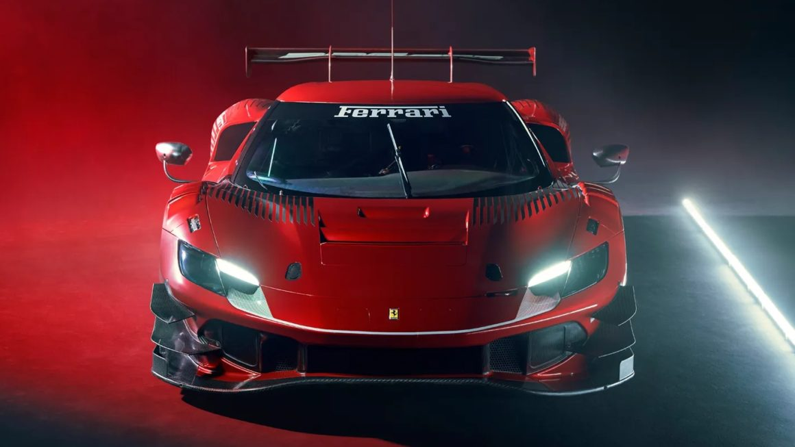
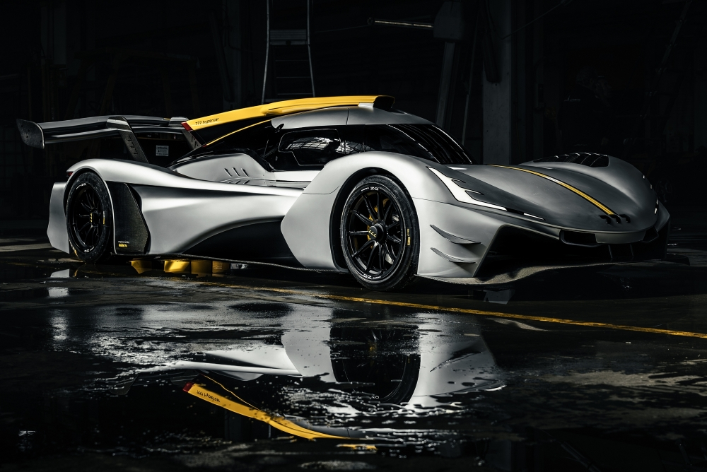
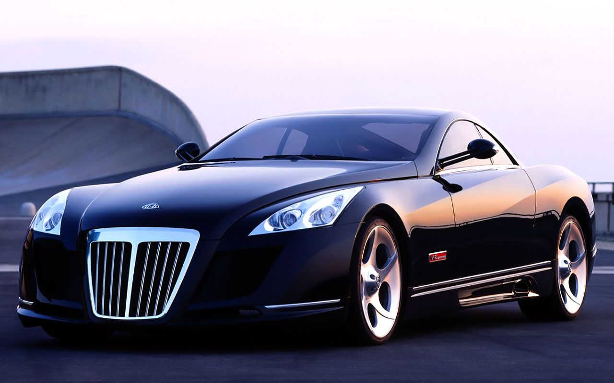
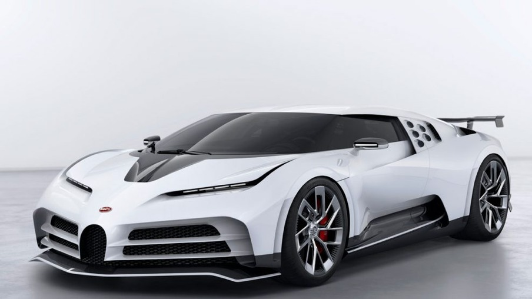
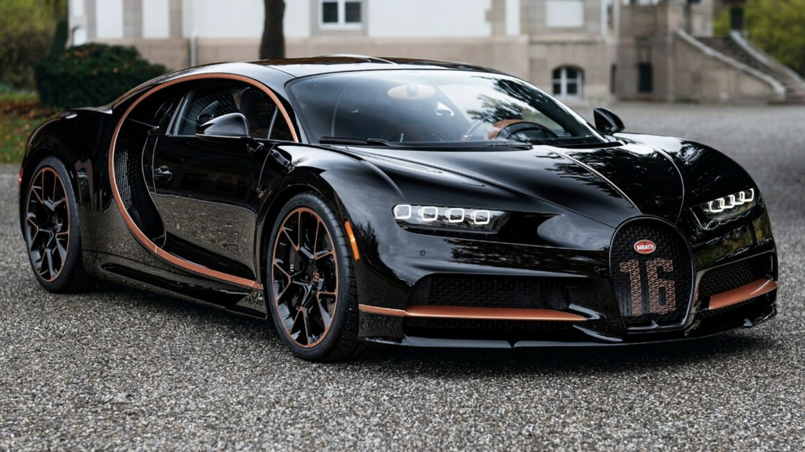
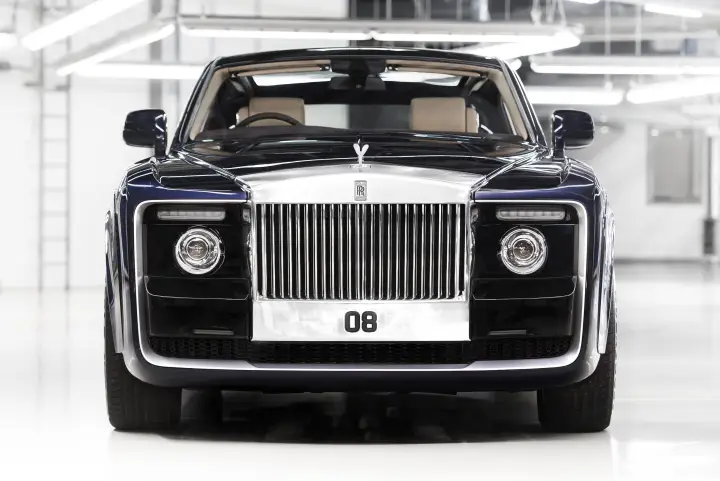
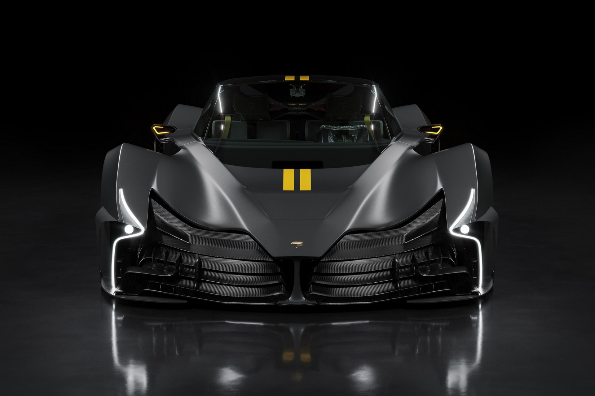
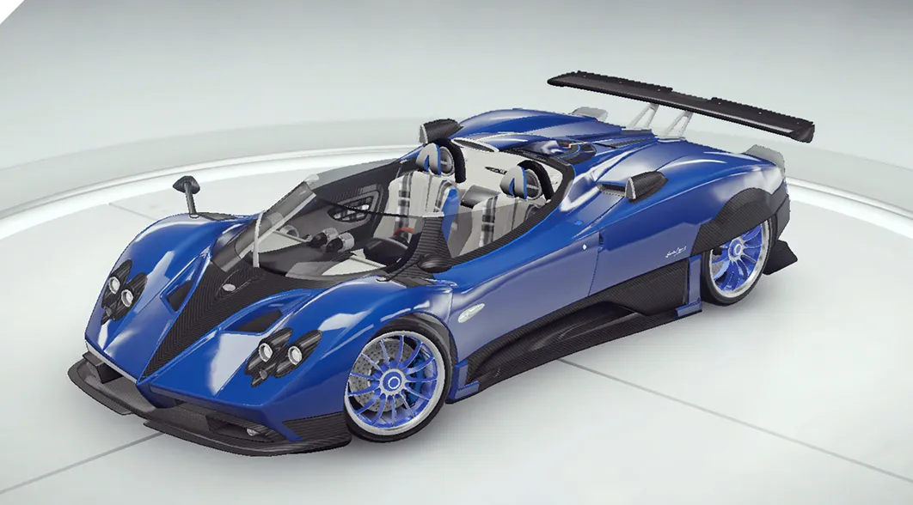
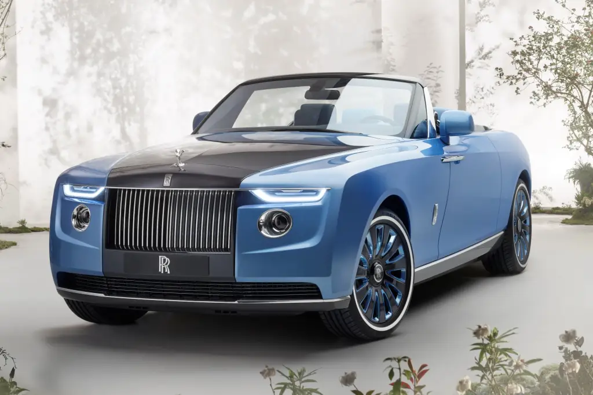
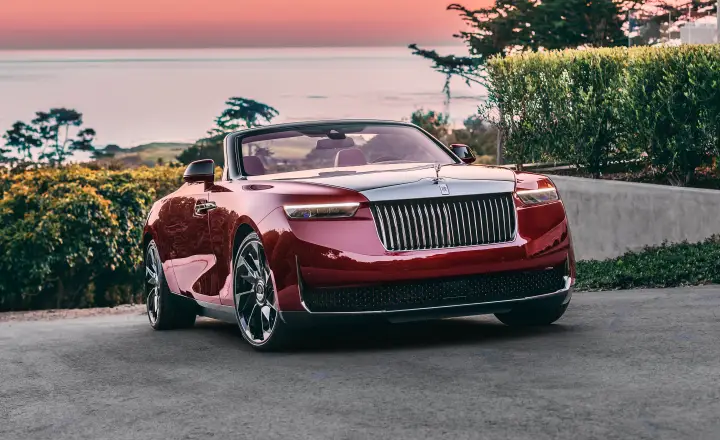

Os 10 carros mais caros do mundo

Quando falamos de supercarros, poucas marcas específicas são lembradas de cara: Bugatti, Ferrari, Koenigsegg, Lamborghini, Pagani e algumas outras. Estas fabricantes se consagraram como o ápice do mundo automotivo, criando veículos exclusivos para os clientes mais ricos do mundo que buscam os carros mais caros, rápidos e belos do planeta.
Mas para criar essa lista dos carros mais caros mundo, vasculhamos entre os preços e encontramos quase 30 carros que custam mais de US$ 1 milhão. Este grupo inclui conversíveis híbridos da Ferrari, um hipercarro americano e até mesmo um Rolls-Royce único feito para realeza.
Obviamente, esta lista considera o preço dos carros totalmente novos. Veículos raros de leilão podem custar muito mais e o seu valor pode variar bastante. Ainda assim, a lista com os 20 carros mais caros do mundo está bem recheada para te fazer sonhar com o que poderia comprar se ganhasse na Mega Sena acumulada.
10- 777 Hypercar

US$ 7,6 milhões
Projetado pela Dallara, o 777 se destaca pelo desempenho graças a um monocoque de carbono homologado pela FIA, aerodinâmica sofisticada que mantém o carro quase literalmente grudado ao asfalto, com capacidade de atingir 370 quilômetros por hora. O motor é um V8, e pesa 900 quilos, considerado muito leve. As entregas dos carros encomendados começam a partir de 2025, segundo o fabricante.
9- Mercedes-Maybach Exelero

US$ 8 milhões
A divisão de ultraluxo da Mercedes-Benz, chamada de Maybach, desenvolveu um carro com pneus para atingir mais estabilidade. O Maybach Exelero é um cupê encomendado pela marca de pneus Fulda. A motivação por trás dessa encomenda era conduzir testes e promover uma nova linha de pneus. O Exelero tem 690 cavalos de potência e é um dos carros mais queridinhos de artistas como rapper Jay-Z.
8- Bugatti Centodieci

US$ 9 milhões
Com origem francesa e abaixo da marca dos US$ 10 milhões, surge o Bugatti Centodieci. Rendendo homenagens ao clássico Bugatti EB110 e construído sobre a base do Bugatti Chiron, o "110" apresenta uma série de destaques, com um impressionante motor W16 de 8 litros que entrega 1.600 cavalos de potência, e velocidade máxima de 379 quilômetros por hora. Vai de zero a 100 quilômetros por hora em 2,4 segundos.
7- Bugatti Chiron

US$ 10,78 milhões
Ao conquistar o título de carro novo mais caro já vendido em leilão, o Bugatti Chiron Profilée se destaca entre quase todos os carros de luxo disponíveis no mercado. Embora seja uma versão ligeiramente mais atenuada do Pur Sport, orientado para corridas, o Profilée ainda impressiona. Atingindo a marca de 100 quilômetros por hora em aproximadamente 2,3 segundos.
6- Rolls-Royce Sweptail

US$ 13 milhões
O Rolls-Royce Sweptail já foi considerado o carro mais caro do mundo em anos anteriores. Não foi originalmente concebido por nenhum motivo em particular: ele foi encomendado sob medida. Este carro-conceito se autodenomina o "equivalente automotivo da alta costura", destacando não apenas sua estética deslumbrante mas também sua impressionante potência. Sob o capô, o Sweptail abriga um robusto motor V12 de 453 cavalos.
5- SP Automotive Chaos

US$ 14,4 milhões
O designer automotivo grego Spyros Panopoulos apresentou dois carros de alta performance utilizando alguns dos materiais mais avançados disponíveis. O modelo básico, chamado SP Automotive Chaos Earth, oferece 2.048 cavalos de potência e possui um preço impressionante de US$ 6,3 milhões. Já a variante Zero Gravity eleva a potência do motor para 3.065 cavalos, alcançando 100 quilômetros por hora, com um preço de 14,4 milhões de dólares.
4- Pagani Zonda HP Barchetta

US$ 17,6 milhões
Horacio Pagani, o inovador fundador da empresa que leva seu nome, encomendou a concepção deste carro-conceito, projetado para ele e outros dois proprietários, cujas identidades permanecem desconhecidas. O Zonda HP Barchetta recebeu esse nome - Barchetta - porque, para Pagani, tinha a aparência de um "barquinho" em italiano. É capaz de acelerar de zero a 100 quilômetros por hora em 3,4 segundos.
3- Bugatti La Voiture Noire

US$ 18,7 milhões
Inspirado no clássico Bugatti 57 SC Atlantic, cada elemento deste hipercarro é verdadeiramente excepcional, começando por seu motor de 8 litros e 16 cilindros, gerando 1.500 cavalos de potência, todos meticulosamente montados à mão. Alcança os 100 quilômetros por hora em apenas 2,4 segundos. O veículo possui apenas um exemplar que circula pelas ruas da Suíça.
2- Rolls-Royce Boat Tail

US$ 28 milhões
Este veículo com imponentes 5,6 metros de comprimento, une um design que remete à nostalgia e elementos modernos. Apresenta elementos do Boat Tail original, de 1032. Sob o capô, o carro é impulsionado por um robusto V12 biturbo de 6,75 litros, gerando 563 cavalos de potência, tudo isso administrado por uma transmissão automática de 8 velocidades. É feito somente sob encomenda.
1- Rolls-Royce La Rose Noire Droptail

US$ 30 milhões
A Rolls-Royce se destaca com seu mais recente modelo, redefinindo os padrões de luxo e estabelecendo um recorde histórico como o carro novo mais caro. Este veículo de dois lugares apresenta uma capota rígida removível, oferecendo a versatilidade de ser conduzido como um roadster descoberto ou um elegante cupê fechado.
Composto por 1.603 peças de folheado de Black Sycamore, que são colocada a mão durante dois anos. O Rolls-Royce La Rose Noire Droptail é inspirado na rosa Black Baccara, uma flor intensa e aveludada originária da França e adorada pela mãe da família do consumidor que encomendou o modelo. O nome do futuro dono desse verdadeiro luxo sobre rodas permanece em sigilo.